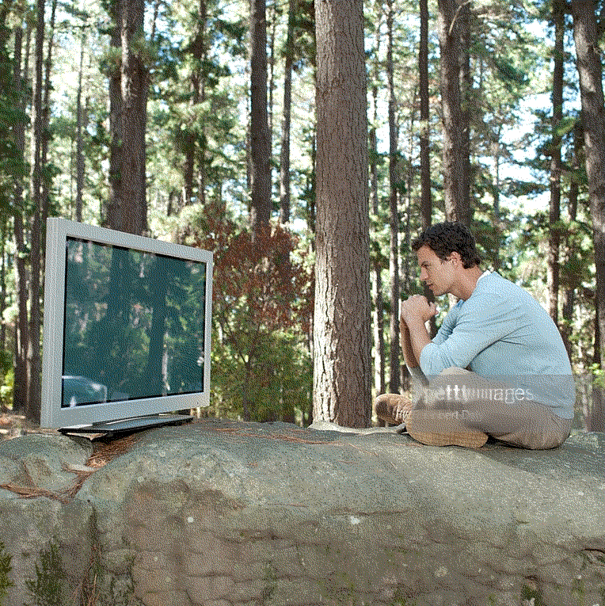

They seem to be very focused on their breath.
Hello! Are you here for the meditation session? We are starting soon
This will take you exactly 10 minutes and I guarantee you'll feel energized afterwards
Sit comfortably on your chair. Start noticing your breath.